NISHIO Hirokazu
[entrypoint] > [what I did] > [Virtual Star]Virtual Star
This page describes about my artwork 'Virtual Star', which awarded on ASIAGRAPH 2009 as an excellent work. It was Exhibited on National Museum of Emerging Science and Innovation (Miraikan) at Odaiba, Tokyo.
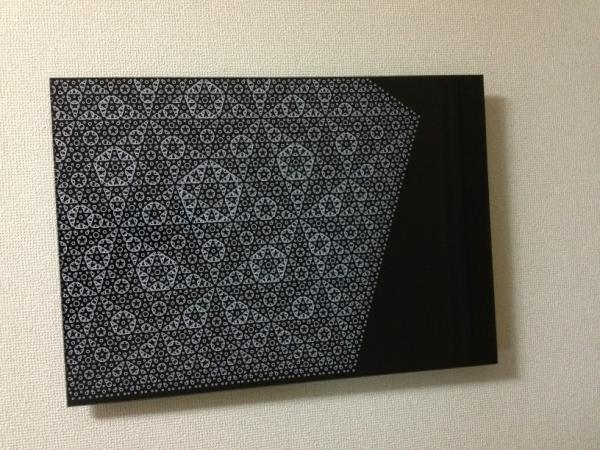
In this artwork, there are a lot of circles. Circles only. No lines. However you will see a lot of stars. Those stars are not drawn. They are virtual stars.
It is a form of visual illusion, such called illusory contours or subjective contours.
Motivation
I'm doctor of science and I want to show you the beauty of mathematics.
You may heard about golden ratio:
φ = 1.6180339887...
The number has very beautiful property:
1 / φ = φ - 1.
You can easily confirm it with a calculator. 1 / 1.618 becomes 0.618 and 1.618 * 1.618 becomes 2.618.
I used this ratio to determine where and of which size circles are drawn.
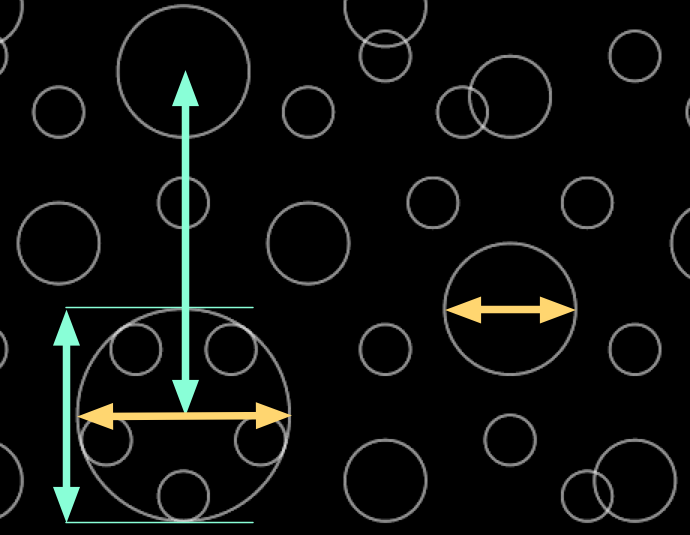
This is the reason why those circles make you see virtual stars.
How to see the artwork
I released iPad/iPhone apps Virtual Star Clock FREE and Virtual Star Clock.
If you want to buy physical version, please contact me by e-mail < nishio (dot) hirokazu (at) gmail (dot) com >. It is made with photo-acrylic printing, which is a technology used to display photographs in museums.
420mm x 594mm, 200 USD.
If there are no limit to budget, I want to create new version with Iron(II,III) oxide and gold. They are very stable and will last handreds of years, so suitable for mathematical beauty.
History
2012-04-28 iPad/iPhone apps 'Virtual Star Clock'
Released Virtual Star Clock FREE and Virtual Star Clock.
Description on app store
The artwork of this clock is derived from my artwork 'Virtual Star', which awarded on ASIAGRAPH 2009 as an excellent work. It was exhibited on National Museum of Emerging Science and Innovation (Miraikan) at Odaiba, Tokyo. Of cource most of people didn't go the exhibition, so I made this app as a popular edition, such like postcards sold on museum shops.
Virtual Star
In this artwork, there are a lot of circles. Circles only. No lines. However you will see a lot of stars. Those stars are not drawn. They are virtual stars. It is a form of visual illusion, such called illusory contours or subjective contours.2011-10-26 A2-size photo-acryl version
A2 means 420mm x 594mm. I decided to fix circles' line width. I think it is better to show concept.
2009-10-22 ASIAGRAPH 2009
It was selected as one of the exellent works on ASIAGRAPH 2009.
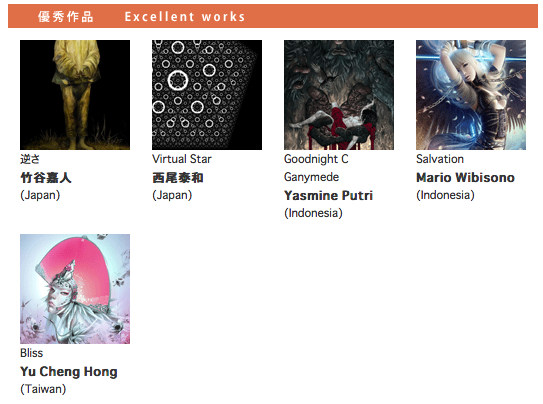
Exhibited on National Museum of Emerging Science and Innovation (Miraikan) in Odaiba, Tokyo.
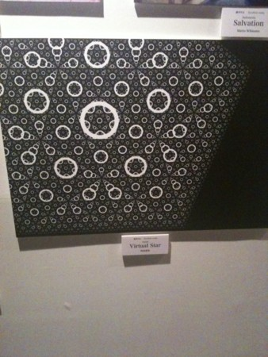
White rings on black background looks nice.
2009-07-07 A1-size
I wonder how it looks if it is larger size.
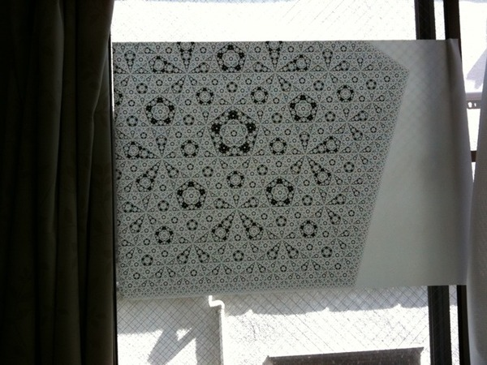
2009-06-21
Exhibition at "TAGBOAT Next Generation SUMMER AWARD 2009". Total 60 items were selected.
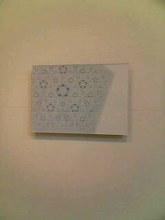
Illustration of its algorithm.
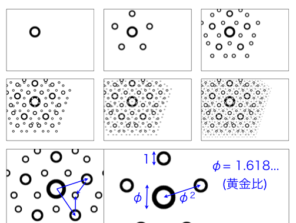
It was awarded IKEUCHI prize! 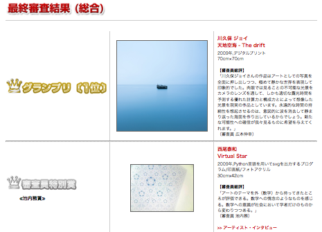
2009-06-16
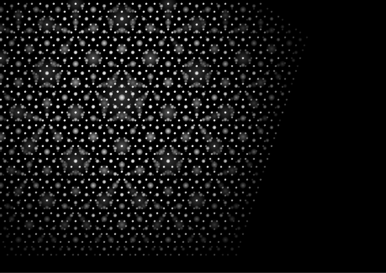
"Virtual Star with lights"2009-06-15
Test of my svg library.
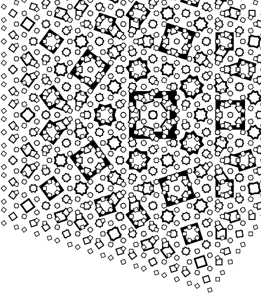
"Virtual Star with boxes"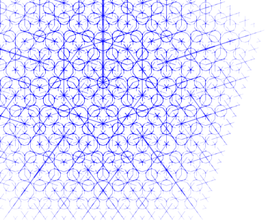
"Virtual Star with lines"2009-06-11
I applied Virtual Star (2009-05-26 version) to the art exhibition "TAGBOAT Next Generation SUMMER AWARD 2009" and it was selected from other 377 application. I autographed today. It is #2 of my serial-numbered autograph. It says "Virtual Star 2009-05-26 Nishio Hirokazu(西尾泰和) #2".
2009-06-05
Acryled 2009-05-26 version. This photo's white balance is awful...
Background is completely white and foregroung is subdued blue.
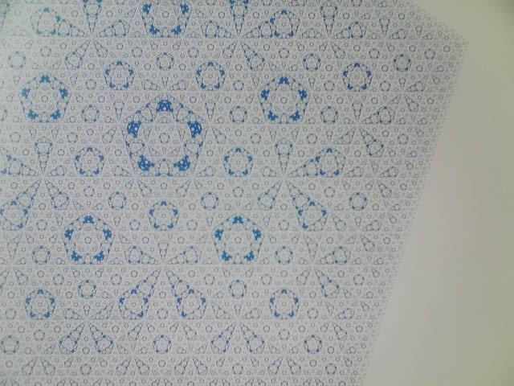
2009-05-26
Large Blue version(A3 size) It is shrinked to 12.5% of original.
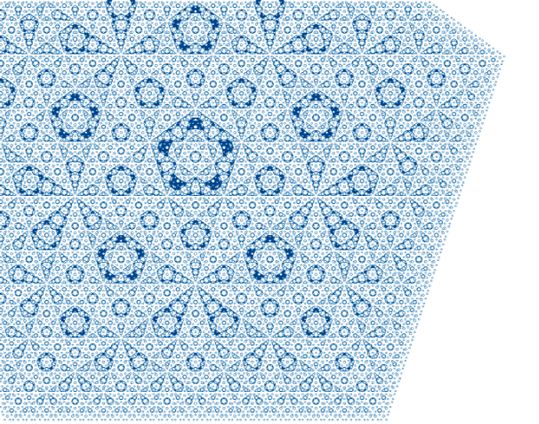
2009-05-24
 displayed on "Make: Tokyo Meeting 03"
displayed on "Make: Tokyo Meeting 03"
2009-05-19
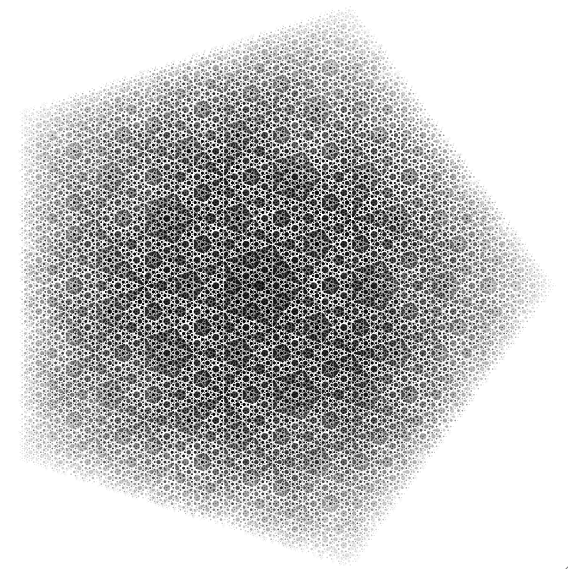
published on my blog
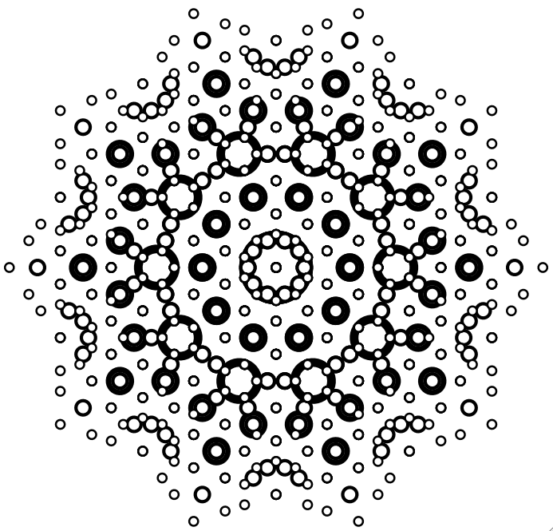
published on my blog
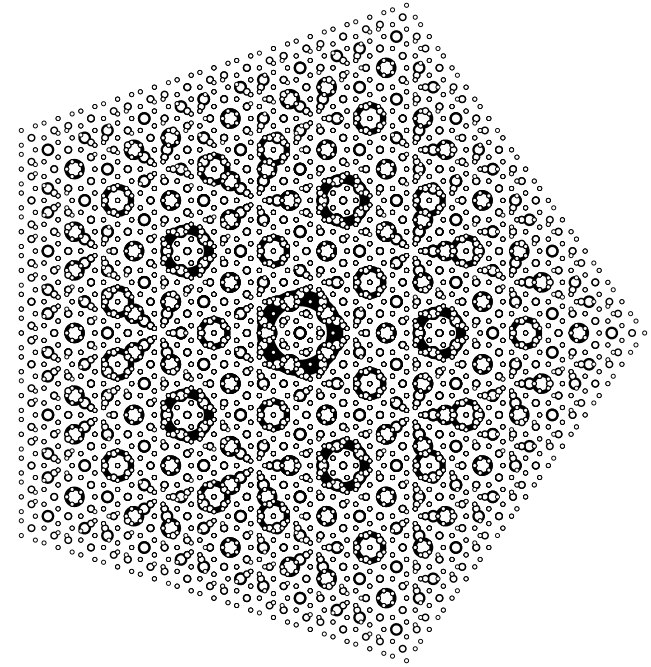
published on my blog
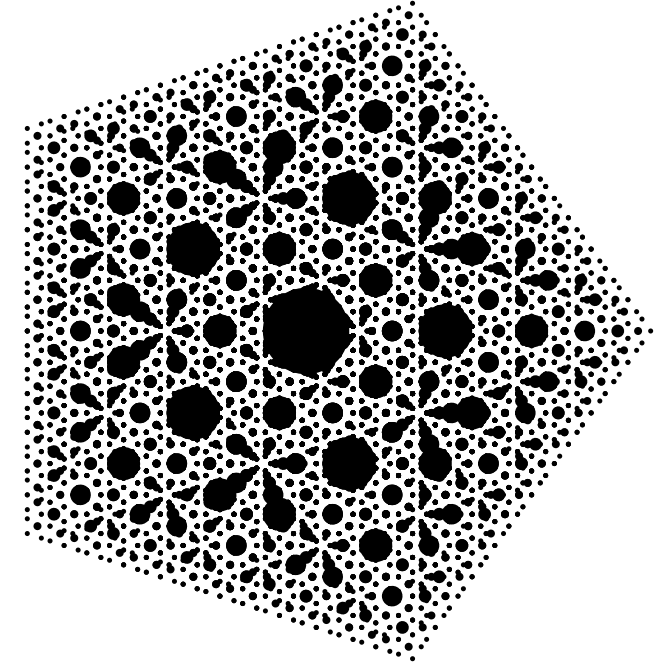
published on my blog
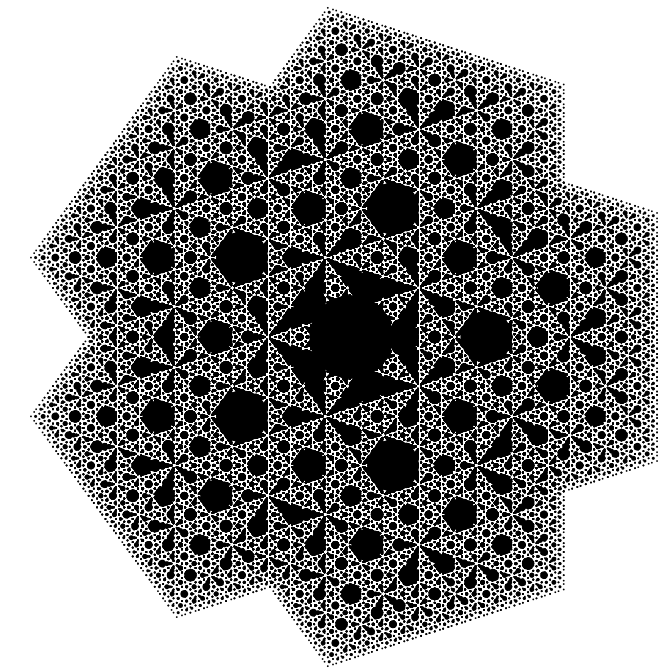
published on my blog